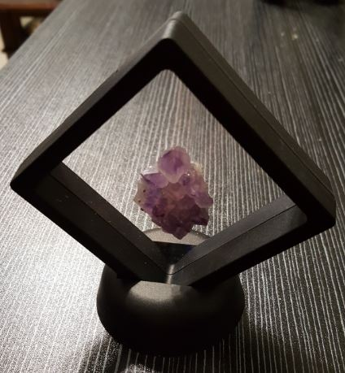
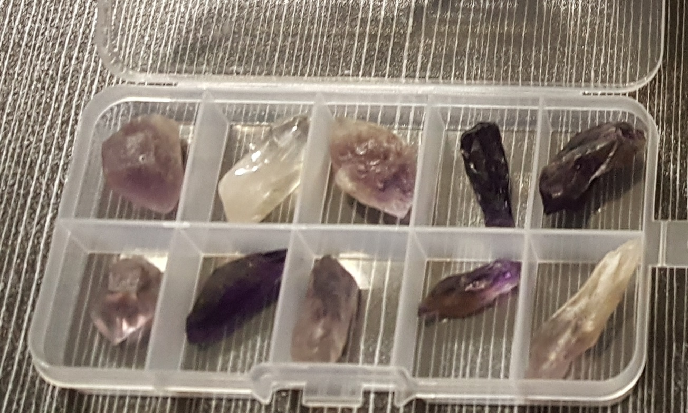

L’ametista è una varietà microcristallina e violacea del quarzo, la cui formula chimica è SiO₂ (biossido di silicio). Il suo caratteristico colore viola, che varia dal lilla tenue al violetto intenso, deriva dalla presenza di impurezze di ferro (Fe³⁺) all’interno della struttura cristallina, combinate con irraggiamenti naturali (radioattività residua nelle rocce) che alterano lo stato di ossidazione del ferro.
I cristalli di ametista si formano tipicamente in geodi e vene idrotermali, spesso associati ad agata, calcite e altre zeoliti. Il colore può essere discontinuo (“zona viola”) e si attenua se esposto a temperature superiori a 300–400 °C, trasformandosi in tonalità giallastre (citrino). Grazie alla sua resistenza e alla bellezza cromatica, l’ametista è una delle gemme più apprezzate in gemmologia e nella litoterapia simbolica.
Noto nell’antichità come amethystos (ἀμέθυστος), che in greco significa letteralmente “non ubriaco”. Si credeva che indossare o tenere con sé questa gemma aiutasse a mantenere la mente lucida e a proteggere dagli eccessi, sia fisici che emotivi. Intrisa di fascino dionisiaco, l’ametista divenne simbolo di temperanza e chiarezza di pensiero.
Nella tradizione simbolica l’ametista è associata a saggezza, visione interiore e serenità. Tenere un’ametista sul comodino o vicino al letto aiuterebbe ad acquietare stati di ansia, agitazione o insicurezza, favorendo un sonno ristoratore e sogni lucidi.
L’ametista è tradizionalmente associata al sesto chakra (Ajna, il “terzo occhio”).
Posizionata sulla fronte, favorisce intuizione e visione interiore, aiuta la concentrazione meditativa, sostiene la chiarezza mentale, porta equilibrio tra mente razionale e intuitiva.

L’ametista da millenni attraversa culture e credenze, intrecciando la sua natura cristallina con la spiritualità. Come riportato dalle fonti storiche, il nome “amethystos” riflette la convinzione che la pietra potesse contrastare l’ebbrezza e proteggere dalle passioni eccessive — un dono prezioso per mantenere la lucidità mentale anche nei momenti di prova.
Oltre a proteggere dagli eccessi, nella visione olistica l’ametista è considerata una pietra di trasformazione interiore, capace di calmare la mente e aprire canali di percezione sottile. La sua energia calmante è spesso consigliata per ambienti dedicati alla meditazione o alla lettura.
- Acquiete ansia e agitazione
- Riduce insicurezze notturne
- Stimola la concentrazione meditativa
- Equilibrio tra mente razionale e intuitiva
- Sul comodino per sonno sereno
- Sul terzo occhio durante la meditazione
- Come gioiello per chiarezza mentale
- In elixir di cristallo (uso indiretto)
“Noto nell’antichità come amethystos (non ubriaco) si credeva che aiutasse a mantenere la mente lucida e a proteggere dagli eccessi, sia fisici che emotivi.
Nella tradizione simbolica l’ametista è associata a saggezza, visione interiore e serenità. Tenere un’ametista sul comodino o vicino al letto aiuterebbe ad acquietare stati di ansia, agitazione o insicurezza.
L’ametista è tradizionalmente associata al sesto chakra (Ajna, il “terzo occhio”). Posizionata sulla fronte, favorisce intuizione e visione interiore, aiuta la concentrazione meditativa, sostiene la chiarezza mentale, porta equilibrio tra mente razionale e intuitiva.”

Purezza e cura
Pulisci l’ametista con acqua tiepida e sapone neutro; evita lunghi bagni di sole perché la luce intensa e il calore possono sbiadire il viola. Ricarica la sua energia ponendola su un geodo di quarzo o al chiaro di luna.
Varietà e giacimenti
I principali giacimenti si trovano in Brasile, Uruguay, Zambia e Russia. L’ametista “de luxe” presenta un colore viola intenso e saturo, senza zone incolori evidenti.
Scienza e simbolo
La gemmologia odierna conferma che la colorazione è legata al ferro e a radiazioni naturali, mentre la tradizione le attribuisce proprietà calmanti. Un affascinante ponte tra chimica e spiritualità.